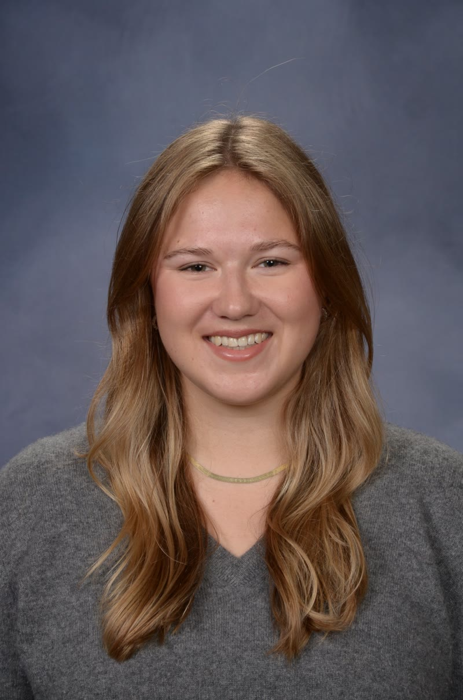

More work
Studies, posters, and team projectsExperience
Rodeo FX
Software Developer InternJul 2025 - May 2026 · Venice, CA- Built and shipped AI-driven image and video tools inside a live, high-end VFX pipeline
- Engineered custom Python and PyTorch ComfyUI nodes with API integrations for artists
- Evaluated outputs with artists against production standards
AGBO Studios
Innovation Pipeline InternJun 2024 - Sep 2024 · Los Angeles, CA- Built pipeline automation tools for animation workflows across production teams
- Worked in Maya, Unreal Engine, MetaHumans, Flow, and Rez
- Presented research on emerging tools to technical and executive leadership
Monolith Studios
Student InternAug 2022 - Sep 2023 · Los Angeles, CA- Supported LED volume deployment for in-camera VFX
- Worked hands-on with Unreal Engine real-time visualization
- Attended SIGGRAPH 2022 and 2023

About
I studied Computer Science at Stanford on the Visual Computing track, where I spent most of my time on rendering, simulation, and computer vision. My senior project, advised by Kayvon Fatahalian, asked how far a single image can go as a moving background for LED volume stages.
Outside of class I have worked where art and engineering meet: generative AI tools for artists at Rodeo FX, pipeline automation at AGBO, and virtual production at Monolith. I like building the tools that let artists move faster without giving up control.